Part oneBecoming friends with your camera
In a pinhole camera, an object at depth Z appears with an image size proportional to f / Z. Zooming changes f (the whole image scales equally); walking changes Z, and that changes the relative sizes of near and far things. That second effect is what we call perspective: it depends only on where the camera stands (the center of projection), not on the lens. All three experiments below play with this.
Selfie: the wrong way vs. the right way
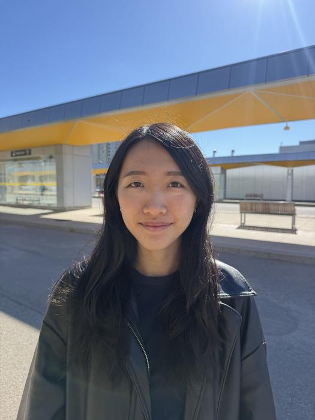
The wrong way. The middle of the face (nose, mouth) looks exaggerated relative to the rest of the head. The background looks far away and wide: the whole shelter roof fits in the frame and the bench looks small.
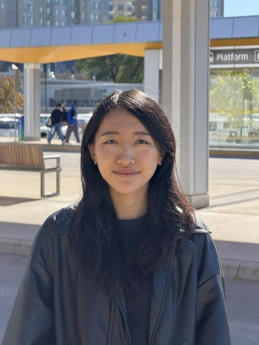
The right way. The face looks flatter and more natural. The background seems pulled up close behind the head: the bench, the "Platform" sign and the people walking by look much larger.
Why. From arm's length, the nose is noticeably closer to the camera than the cheeks and ears, so its f / Z is noticeably larger and it is magnified more. From several metres away that depth difference is tiny compared with the distance, every part of the face is magnified almost equally, and the proportions look natural. So the telephoto lens isn't what fixes the face; standing farther away does, and zooming in only brings the face back to the same size in the frame.
Architectural perspective compression
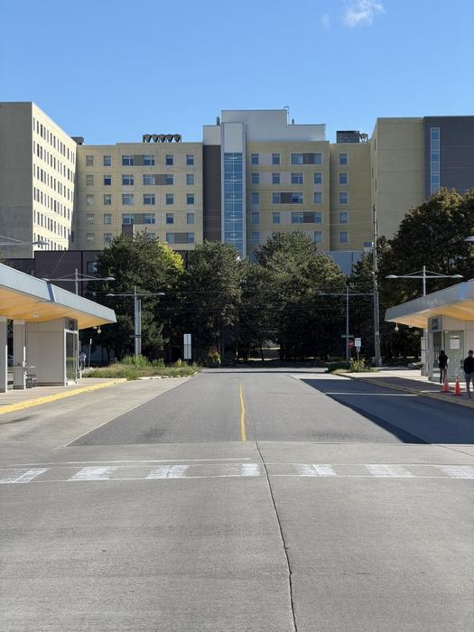
Compressed. The shelters, the road and the buildings at the end look stacked on top of each other: the buildings loom right behind the shelters, and the scene looks flat.
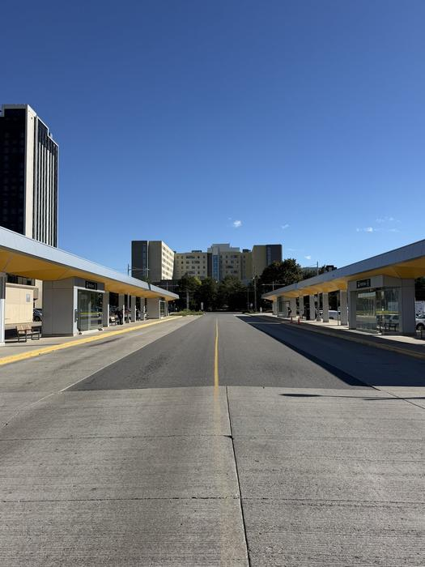
Deep. The nearby road and shelters look much bigger than the buildings, the row of shelters recedes steeply into the distance, and the buildings look small and far away.
Why. This is the selfie effect applied to a whole street. From far away, the near and far objects differ only a little in distance relative to how far the camera is, so they are magnified by similar amounts and the scene looks flat. After walking closer, the road and shelters are much closer than the buildings, so they are magnified much more. The "compression" is often blamed on the telephoto lens, but it comes from the camera position: from the same spot, a wide shot cropped to the same framing would look exactly as compressed. The long lens only lets me fill the frame from that far away.
The dolly zoom
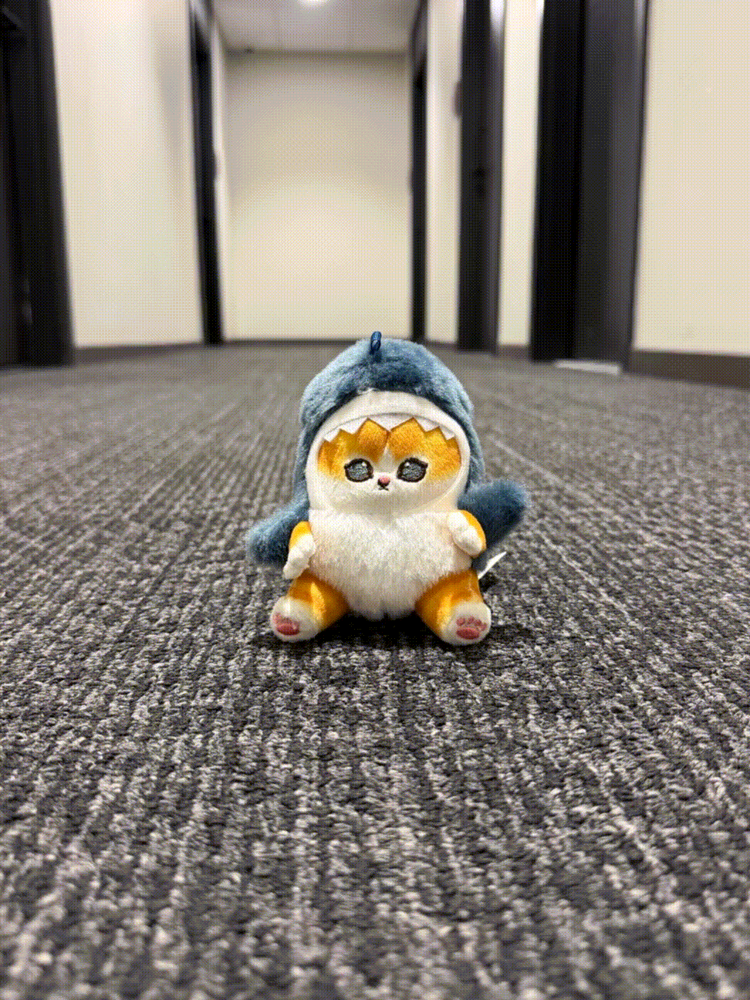
The "Vertigo shot", named after Hitchcock's Vertigo (1958): move the camera while zooming the opposite way, so the subject stays the same size. This is the pull-out version: the camera moves back while zooming in on the plush toy, keeping f / Z of the toy constant.
The hallway behind it is farther away, so moving back changes its distance by a smaller fraction than the toy's, while the zoom magnifies everything equally. Its f / Z therefore grows: the end of the hallway gets bigger and appears to rush towards the toy, while the toy stays roughly the same size. It's the selfie and street experiments combined into one continuous move.
Part twoColorizing the Prokudin-Gorskii collection
From about 1907, Sergei Prokudin-Gorskii photographed the Russian Empire by exposing each scene three times onto one glass plate, through a blue, a green and a red filter. The Library of Congress scanned the plates. The goal: take a scan and automatically produce a color image with as few artifacts as possible.
Overview: from glass plate to color image
- Load and convert. Every scan is converted to 32-bit floats in [0, 1]. The course plates are 8-bit JPGs (÷ 255); the TIFFs I downloaded are mostly 16-bit (÷ 65535), so all plates end up on the same scale.
- Split. The plate holds three exposures stacked top to bottom in the order B, G, R. It is divided into three
equal parts of
height // 3rows (the 1–2 leftover rows are dropped so all three channels have the same shape). - Align. G and R are each aligned to B by searching for the (x, y) shift that makes them match best. The match is computed directly on the raw pixel values of each channel, with no gradient or edge features; aligning on image gradients instead is tried later, in B1.
- Stack the shifted R, G and B into one RGB image.
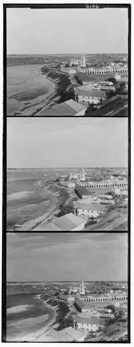
Plate 01164v, 1024×396">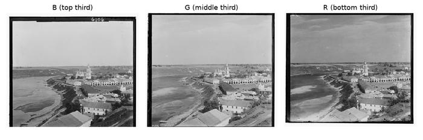
Split into three equal thirds">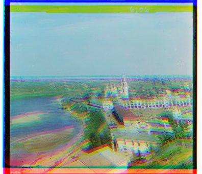
Stacked, unaligned color fringes">
The three exposures were taken one after another, so the camera and the plate moved slightly between them. Stacking
without alignment gives strong red/green/blue fringes; the whole assignment is about finding the right shifts.
Throughout, an offset (dx, dy) means "shift the channel dx pixels right and dy pixels down"
(np.roll); every offset on this page is the shift applied to G or R to match B.
Matching metrics: L2 and NCC
To decide which shift is best, we need a score for how well two channels match. Two classic choices:
L2 compares raw brightness: it's zero only if the pixels are equal. NCC (normalized cross-correlation) treats each image as one long vector, scales both to length 1 and takes their dot product, so a channel that is a scaled copy of another (say, twice as bright everywhere) still matches perfectly. That matters here, because the three plates were exposed through different filters and differ in overall brightness.
Ignore the borders. The plates have black and white borders, scratches at the edges, and np.roll wraps pixels
from one side of the image to the other. All of that would dominate the score, so every metric is computed only on the
interior: 10% is trimmed from each side. The trim (≈ 34 px on a low-res plate) is larger than the search window, so wrapped pixels are never scored.
Single-scale alignment
The simplest search: try every shift in a window, score each one, keep the best.
- For every
dxanddyin [−20, 20] (that's 1681 candidates), shift the channel withnp.roll. - Score the interior of the shifted channel against the interior of B, with L2 or NCC.
- Keep the shift with the best score. The interior of B is cropped once, outside the loops.
This runs in about 0.15 s per low-resolution plate and metric, G and R together (341 × 387–400 px per channel).
Why a ±20 window and not ±15? The assignment suggests [−15, 15]. With ±15, three plates
(01597v, 01598v, 01728v) came back with R at exactly dy = 15, the edge of the window: a sign that the true
shift was outside the search range. Widening to ±20 found dy = 16, 16 and 18 with NCC (L2 gives 17 for 01598v). One fixed window is used for every image.
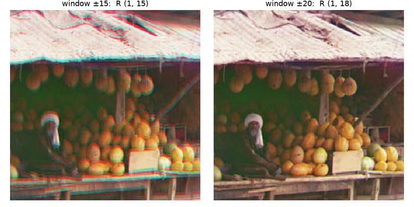
01728v center crop. With ±15 the best shift is clipped and red/cyan fringes remain; with ±20 the plate is sharp.">Results: single-scale, L2 vs. NCC


| Plate | G (L2) | R (L2) | G (NCC) | R (NCC) |
|---|---|---|---|---|
| 00056v | (1, 6) | (1, 13) | (1, 6) | (1, 13) |
| 00125v | (2, 5) | (1, 10) | (2, 5) | (1, 10) |
| 00163v | (1, -3) | (1, -4) | (1, -3) | (1, -4) |
| 00804v | (-2, 6) | (-4, 13) | (-2, 6) | (-4, 13) |
| 01164v | (2, 6) | (3, 11) | (2, 6) | (3, 11) |
| 01269v | (2, 6) | (3, 14) | (2, 6) | (3, 13) |
| 01522v | (2, 6) | (1, 13) | (2, 6) | (2, 13) |
| 01597v | (1, 7) | (1, 16) | (1, 7) | (1, 16) |
| 01598v | (0, 8) | (-1, 17) | (0, 8) | (-1, 16) |
| 01728v | (1, 8) | (1, 18) | (1, 8) | (1, 18) |
| 10131v | (2, 6) | (3, 12) | (2, 6) | (3, 12) |
| 31421v | (0, 8) | (0, 13) | (0, 8) | (0, 13) |
All 12 low-resolution plates align cleanly with both metrics. L2 and NCC agree exactly on 9 of 12; on the other three they differ by one pixel in R, which isn't visible.
Multi-scale image pyramid: coarse-to-fine alignment
The full-size scans are about 3,200 × 3,700 pixels per channel, and the shifts reach 161 px. An exhaustive search over ±160 px would be 103,041 candidates, each on a 12-megapixel image: far too slow. The fix is an image pyramid: the same image at several resolutions, each half the size of the previous one.
Downsampling, done properly
Halving an image by keeping every other pixel (im[::2, ::2]) causes aliasing: detail finer than the new pixel
size folds into false jagged patterns. The fix is to blur first, so that only detail the smaller image can represent is kept.
I compared two blurs: a 2×2 block average, and a Gaussian blur (σ = 1, separable 1-D kernel) followed by subsampling.
Both gave identical alignments on all 18 plates with both metrics; I kept the Gaussian because it removes aliasing best
and it's the standard Gaussian pyramid I will reuse in the next assignment. The pyramid itself is my own code (the 5-tap Gaussian
kernel, blur, subsampling and the level loop); the only library call is scipy.ndimage.convolve1d, which applies the
1-D kernel along the rows and then the columns.
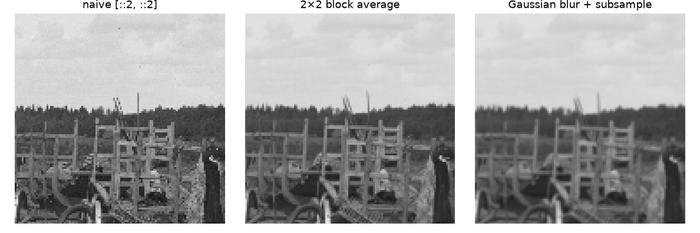
Same patch after three halvings (1/8 size) naive subsampling is grainy and jagged; the block average is better; the Gaussian is smoothest.">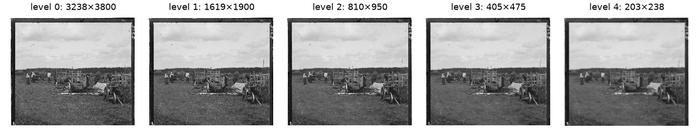
Gaussian pyramid of 01007a's blue channel each level is half the size of the previous one.">The coarse-to-fine search
- Build a pyramid for the channel and for B, halving until the smaller side is at most 400 px
(a full-size plate gets 5 levels, from ≈ 3,200 px down to ≈ 200 px). The stopping size is tied to the search window:
at the coarsest level (≈ 200 px), the 10% border trim is ≈ 20 px, at least the ±20 window, so pixels wrapped around
by
np.rollare never scored at any level (the code checks this with an assertion). - At the coarsest level, run the exhaustive single-scale search with a ±20 window (1,681 candidates), scored with L2 or NCC on the interior exactly as in the single-scale version. At 1/16 size, that covers ±320 px of the full image, for the cost of searching a tiny image.
- Go up one level: double the shift (the image is twice as big), apply it with
np.roll, and refine it with a small ±2 search (25 candidates). A shift found to the nearest pixel is off by at most ±0.5 px; doubling makes that ±1 px, and the blur and subsampling can add about one more pixel, so ±2 covers the error. - Repeat until full resolution. The result is the full-resolution shift.
Why it is fast. On 01007a the pyramid scores 1,681 + 4 × 25 = 1,781 candidate shifts, most of them on a
203 × 238 image. An exhaustive ±160 search at full resolution would score 103,041 shifts on the 3,238 × 3,800 image: about
2,600 times more pixel work. The loop over shifts is a plain Python for loop, as the assignment asks for the
single-scale version, but each score is a single vectorized NumPy operation over the whole interior.
L2 vs. NCC inside the pyramid. Both metrics go through exactly the same steps. The difference matters at the coarsest level: it is the only wide search, and everything after it only refines by ±2 px. On most plates L2 and NCC pick the same coarse shift and end within 1 px of each other. On 01725u they don't: L2's coarse pick is wrong by a small margin, and the pyramid can only double that mistake (see the failure analysis).
Here is the estimate at every level for 01007a: each is roughly twice the previous one plus a small correction.
| Level size | G offset | R offset |
|---|---|---|
| 203 × 238 | (1, 4) | (1, 8) |
| 405 × 475 | (2, 7) | (2, 16) |
| 810 × 950 | (3, 15) | (3, 32) |
| 1619 × 1900 | (7, 30) | (6, 64) |
| 3238 × 3800 | (14, 60) | (13, 129) |
Results: all 18 plates, L2 vs. NCC
One fixed set of parameters for every plate. The 12 low-res plates are only 341 px tall per channel, already below the 400 px stopping size, so their pyramid has a single level: for them the result is the same ±20 search as the single-scale version. The pyramid does its real work on the 6 full-size plates, with 5 levels each. The slowest plate takes about 0.6 s per metric; all 18 plates with both metrics take about 10 s in total.


Offsets
| Plate | type | G (L2) | R (L2) | G (NCC) | R (NCC) |
|---|---|---|---|---|---|
| 01007a | a | (14, 60) | (13, 129) | (14, 60) | (13, 129) |
| 01861a | a | (38, 71) | (62, 148) | (39, 71) | (63, 148) |
| 00458u | u | (6, 43) | (32, 87) | (6, 43) | (32, 87) |
| 01047u | u | (20, 24) | (33, 71) | (20, 24) | (33, 71) |
| 01657u | u | (8, 56) | (11, 116) | (8, 55) | (11, 117) |
| 01725u | u | (44, 77) | (-275, 323) | (44, 77) | (77, 161) |
| 00056v | v | (1, 6) | (1, 13) | (1, 6) | (1, 13) |
| 00125v | v | (2, 5) | (1, 10) | (2, 5) | (1, 10) |
| 00163v | v | (1, -3) | (1, -4) | (1, -3) | (1, -4) |
| 00804v | v | (-2, 6) | (-4, 13) | (-2, 6) | (-4, 13) |
| 01164v | v | (2, 6) | (3, 11) | (2, 6) | (3, 11) |
| 01269v | v | (2, 6) | (3, 14) | (2, 6) | (3, 13) |
| 01522v | v | (2, 6) | (1, 13) | (2, 6) | (2, 13) |
| 01597v | v | (1, 7) | (1, 16) | (1, 7) | (1, 16) |
| 01598v | v | (0, 8) | (-1, 17) | (0, 8) | (-1, 16) |
| 01728v | v | (1, 8) | (1, 18) | (1, 8) | (1, 18) |
| 10131v | v | (2, 6) | (3, 12) | (2, 6) | (3, 12) |
| 31421v | v | (0, 8) | (0, 13) | (0, 8) | (0, 13) |
NCC aligns all 18 plates. L2 fails on one (01725u). The other 5 disagreements between the two metrics are a single pixel and are not visible.
Failure analysis: 01725u with L2
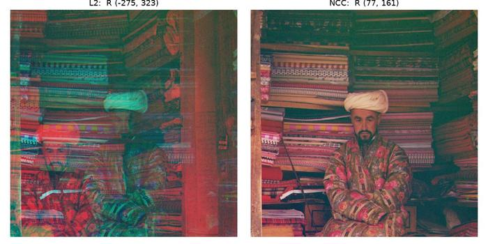
01725u, center crop L2 (left) leaves strong red/green ghosts; NCC (right) is sharp.">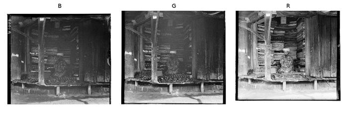
The three channels the rugs and robe are much brighter in R than in B.">- The channels don't have the same brightness. The rug merchant is surrounded by red rugs and wears a red robe, so the R plate is much brighter and more contrasty than B (mean 0.49 vs 0.28, standard deviation 0.26 vs 0.13). L2 compares raw values, so even at the correct shift the difference is large and the brightness mismatch drowns out the structure. NCC divides out each image's overall scale.
- The mistake happens at the coarsest level. At about 200 × 234 px most detail is gone. There, L2's wrong pick scored 40.18 against 41.44 for the right region: a 3% difference, easily flipped. NCC separated them clearly (0.963 for the right region vs 0.887 for L2's pick).
- The pyramid can't recover. Each finer level only refines by ±2 px, so the coarse error is just doubled: (-17, 20) → (-34, 40) → (-69, 80) → (-137, 161) → (-275, 323) (NCC: (5, 10) → (10, 20) → (19, 40) → (39, 81) → (77, 161)). At full resolution L2 actually prefers the correct offset (697.5 vs 704.9), but the pyramid never gets to test it.
- Warning sign: the coarse pick sits exactly on the edge of the ±20 window, meaning the search didn't find a real minimum.
Aligning on edges instead of raw brightness fixes this; see B1.
My choice of image from the collection
I downloaded six full-size plates (TIFFs: five 16-bit, one 8-bit, 37–74 MB each) from the
Library of Congress collection,
made my own low-res versions with my Gaussian downsample (halving 3 times, to about 1,200 px tall), and ran the
same fixed-parameter pipeline: single-scale on the low-res version, the pyramid on the full plate.
Results: low-res (single scale) and full size (pyramid), L2 vs. NCC


| Plate | channel height | low-res G (L2) | low-res R (L2) | low-res G (NCC) | low-res R (NCC) | full G (L2) | full R (L2) | full G (NCC) | full R (NCC) |
|---|---|---|---|---|---|---|---|---|---|
| 00153a | 3223 | (3, 9) | (20, 18) | (3, 9) | (6, 17) | (25, 69) | (275, -210) | (25, 69) | (-194, 312) |
| 00166a | 3218 | (2, 3) | (5, 15) | (2, 3) | (5, 15) | (18, 26) | (35, 121) | (18, 26) | (35, 121) |
| 00169a | 3224 | (-5, 9) | (-8, 14) | (-5, 9) | (-8, 14) | (-41, 75) | (-68, 114) | (-41, 75) | (-68, 114) |
| 00170a | 3257 | (0, 5) | (-10, -6) | (2, 6) | (2, 0) | (8, 43) | (-78, -45) | (14, 52) | (23, 5) |
| 00212a | 3254 | (-1, 6) | (-2, 14) | (-1, 6) | (-2, 14) | (-9, 48) | (-15, 111) | (-9, 48) | (-15, 111) |
| 00171u | 3250 | (-1, 6) | (-3, 12) | (-1, 6) | (-3, 12) | (-6, 49) | (-25, 96) | (-6, 49) | (-25, 96) |
Four of the six align well: the farmhouse (00166a), the trees at dusk (00169a), the lilac bush (00171u) and the cathedral roof (00212a). Their low-res and full-size offsets agree after scaling by 8, within a few pixels (for example 00212a: R (-2, 14) × 8 = (-16, 112) vs. (-15, 111)).
00153a (a seated portrait in a large blue robe) aligns at low resolution, but on the full-size plate the pyramid misaligns R with both metrics. Aligning on edges fixes it; see B1.
00170a (a sunset over water) fails with every method, including the edge features of B1. The scene is almost entirely smooth sky and water, so there is very little structure for any metric to match. The strongest features are the horizon, a single horizontal line, and the red scan damage along the bottom of the plate, which is different on each exposure. The inconsistent offsets show it: R's shift is normally about double G's, but NCC gives G (14, 52) and R (23, 5), and on edges G (-46, 51) and R (-177, -118).
Bells & whistlesBeyond basic alignment
The alignments using NCC and L2 above already looks good, but it's far from the hand-restored versions. These extras make it
more robust and closer to a finished photograph. Libraries used here: scipy.ndimage for the Sobel filter, Gaussian blur and
the rotation / scaling warp.
B1 · Better features: aligning on edges
Brightness differs between channels, but edges (where brightness changes) sit in the same place in every channel. I compute
the gradient magnitude with Sobel filters, sqrt(Gx² + Gy²), and run the same pyramid alignment on these edge maps
instead of the raw pixels.
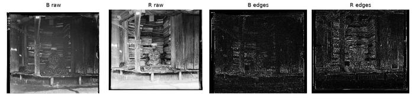
01725u the raw B and R channels look very different; their edge maps look alike.">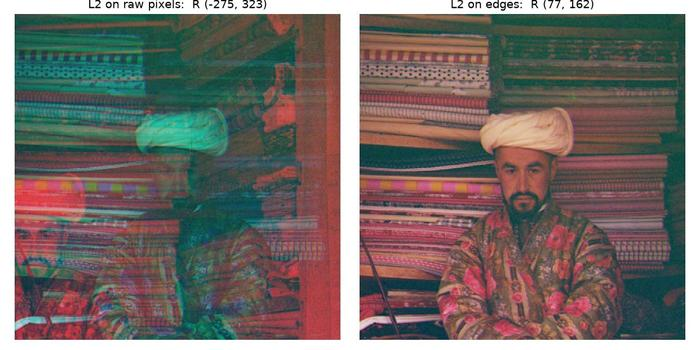
Before / after the same L2 metric, on raw pixels (left) and on edges (right).">With edges, L2 now aligns 01725u and L2 and NCC agree on 17 of 18 plates (the last differs by 1 px). Edges also move a few offsets compared with raw-pixel NCC, by up to 4 px on 00458u and 3 px on 01657u. Both plates have a slight rotation and scale difference between channels (B6 finds 0.1–0.3° and ×1.005), so no single shift fits the whole plate exactly; raw pixels and edges weight different parts of the image and settle on slightly different best shifts. The remaining misfit shows up as fringes near the corners, which B6 corrects (see the 00458u corner in B6).
Show edge-based offsets for all 18 plates
| Plate | G raw L2 | R raw L2 | G raw NCC | R raw NCC | G edges L2 | R edges L2 | G edges NCC | R edges NCC |
|---|---|---|---|---|---|---|---|---|
| 01007a | (14, 60) | (13, 129) | (14, 60) | (13, 129) | (14, 60) | (13, 129) | (14, 60) | (13, 129) |
| 01861a | (38, 71) | (62, 148) | (39, 71) | (63, 148) | (39, 71) | (62, 147) | (39, 71) | (62, 147) |
| 00458u | (6, 43) | (32, 87) | (6, 43) | (32, 87) | (2, 42) | (29, 85) | (2, 41) | (29, 85) |
| 01047u | (20, 24) | (33, 71) | (20, 24) | (33, 71) | (20, 25) | (33, 71) | (20, 25) | (33, 71) |
| 01657u | (8, 56) | (11, 116) | (8, 55) | (11, 117) | (9, 56) | (13, 120) | (9, 56) | (13, 120) |
| 01725u | (44, 77) | (-275, 323) | (44, 77) | (77, 161) | (44, 76) | (77, 162) | (44, 76) | (77, 162) |
| 00056v | (1, 6) | (1, 13) | (1, 6) | (1, 13) | (1, 6) | (1, 13) | (1, 6) | (1, 13) |
| 00125v | (2, 5) | (1, 10) | (2, 5) | (1, 10) | (2, 5) | (1, 10) | (2, 5) | (1, 10) |
| 00163v | (1, -3) | (1, -4) | (1, -3) | (1, -4) | (1, -3) | (1, -4) | (1, -3) | (1, -4) |
| 00804v | (-2, 6) | (-4, 13) | (-2, 6) | (-4, 13) | (-2, 6) | (-4, 13) | (-2, 6) | (-4, 13) |
| 01164v | (2, 6) | (3, 11) | (2, 6) | (3, 11) | (2, 6) | (3, 11) | (2, 6) | (3, 11) |
| 01269v | (2, 6) | (3, 14) | (2, 6) | (3, 13) | (2, 6) | (3, 13) | (2, 6) | (3, 13) |
| 01522v | (2, 6) | (1, 13) | (2, 6) | (2, 13) | (2, 6) | (2, 13) | (2, 6) | (2, 13) |
| 01597v | (1, 7) | (1, 16) | (1, 7) | (1, 16) | (1, 7) | (1, 16) | (1, 7) | (1, 16) |
| 01598v | (0, 8) | (-1, 17) | (0, 8) | (-1, 16) | (0, 8) | (-1, 16) | (0, 8) | (-1, 16) |
| 01728v | (1, 8) | (1, 18) | (1, 8) | (1, 18) | (1, 8) | (1, 18) | (1, 8) | (1, 18) |
| 10131v | (2, 6) | (3, 12) | (2, 6) | (3, 12) | (2, 6) | (3, 12) | (2, 6) | (3, 12) |
| 31421v | (0, 8) | (0, 13) | (0, 8) | (0, 13) | (0, 8) | (0, 13) | (0, 8) | (0, 13) |
My own plate 00153a
On the full-size plate, the pyramid on raw pixels misaligns R with both metrics (NCC (-194, 312), L2 (275, -210)). The channels disagree about what is bright: in R the robe is much darker than the wall behind it, while in B the two are about equally bright, so the raw brightness patterns don't match. On edges, L2 and NCC both give R (39, 142), close to the low-res single-scale offset scaled up, R (6, 17) × 8 = (48, 136).


| Plate | G raw L2 | R raw L2 | G raw NCC | R raw NCC | G edges L2 | R edges L2 | G edges NCC | R edges NCC |
|---|---|---|---|---|---|---|---|---|
| 00153a | (25, 69) | (275, -210) | (25, 69) | (-194, 312) | (24, 70) | (39, 142) | (24, 70) | (39, 142) |
B2 · Automatic cropping
The borders of the result have strange colors: the three plates' borders don't line up, and np.roll wraps pixels
around. Rather than cropping a fixed margin, the crop is detected per image:
- Wrapped pixels. The alignment offsets say exactly how many rows and columns were wrapped around by
np.roll; those are removed. - Border lines. A plate border is a straight line across the whole image, so the brightness jump between two neighbouring rows is large in every column of that row. Edges inside the picture are scattered and average out. In the outer 10% of each side, I find the innermost row / column whose average jump is more than 5× the image's median, in any channel, and crop there.
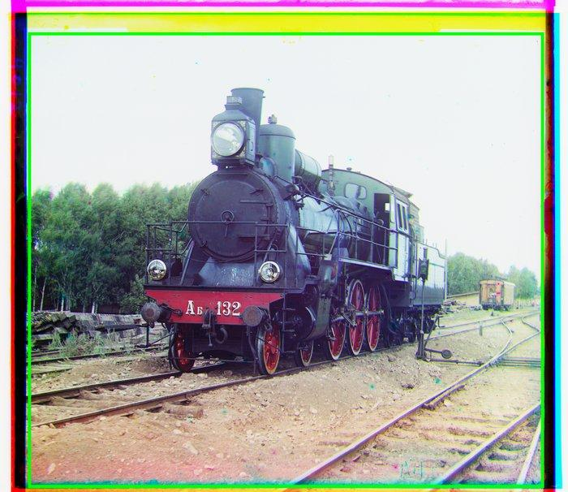
00458u detected box">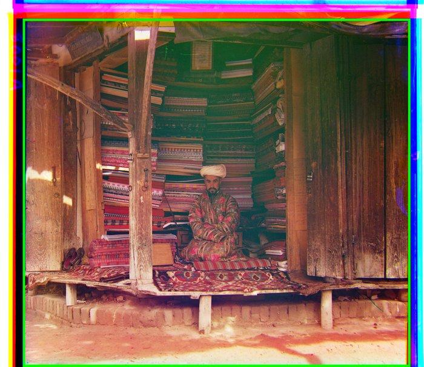
01725u detected box">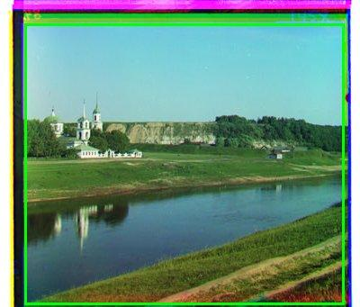
00125v detected box">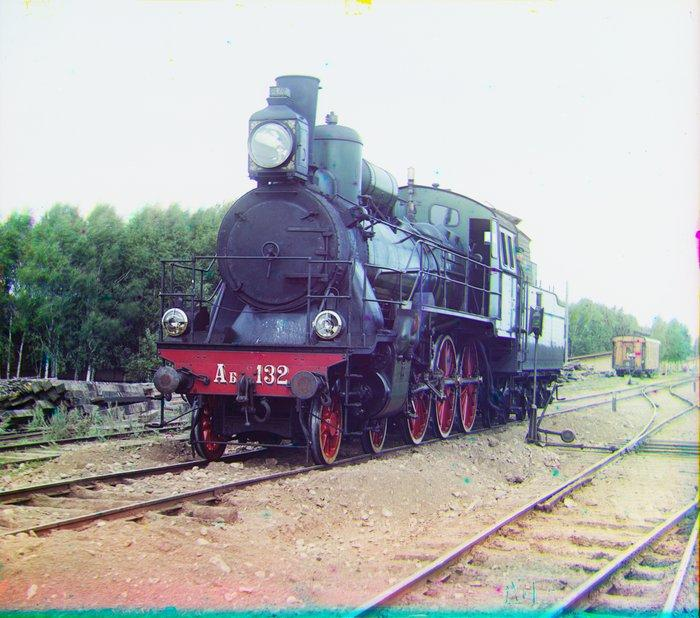
It keeps 81–88% of each plate. What didn't work first: flagging "bad" pixels (very dark, very bright, or with channels that disagree) also flagged white skies and colorful scenes, and cut into the pictures. Limitation: on 01047u, the straight front edge of the table looks like a border line, so about 8% extra is cropped at the bottom. On my own plate 00166a, part of the white plate border is left on the right and bottom (see the final results).
Show crop boxes for all 18 plates
| Plate | top / bottom / left / right | kept |
|---|---|---|
| 01007a | 236 / 3238 / 220 / 3596 | 82% |
| 01861a | 156 / 3160 / 260 / 3588 | 83% |
| 00458u | 212 / 3212 / 184 / 3584 | 84% |
| 01047u | 160 / 2956 / 68 / 3548 | 81% |
| 01657u | 220 / 3184 / 184 / 3532 | 82% |
| 01725u | 164 / 3231 / 200 / 3612 | 87% |
| 00056v | 13 / 331 / 24 / 388 | 85% |
| 00125v | 26 / 339 / 27 / 383 | 82% |
| 00163v | 9 / 332 / 8 / 366 | 88% |
| 00804v | 21 / 341 / 21 / 375 | 84% |
| 01164v | 25 / 337 / 22 / 378 | 82% |
| 01269v | 27 / 341 / 25 / 382 | 83% |
| 01522v | 20 / 338 / 10 / 374 | 87% |
| 01597v | 18 / 330 / 26 / 378 | 82% |
| 01598v | 16 / 334 / 14 / 379 | 87% |
| 01728v | 27 / 341 / 20 / 373 | 82% |
| 10131v | 26 / 341 / 20 / 377 | 82% |
| 31421v | 14 / 341 / 20 / 377 | 86% |
B3 · Automatic contrast
A linear stretch, as the assignment suggests: the darkest value (over all channels) becomes 0 and the brightest becomes 1. I use the 0.5th and 99.5th percentiles instead of the exact minimum and maximum, so a few dust specks or scratches don't decide the stretch, and the same mapping is applied to all three channels so the colors don't shift.
B4 · Automatic white balance
Two steps: estimate the color of the light (the illuminant), then scale each channel so that color becomes neutral.
- Gray world: assume the scene averages to gray; the illuminant is the average color.
- White patch: assume the brightest color is white; the illuminant is the 99th percentile of each channel.
Gray world removes the magenta cast from the portrait, but over-corrects scenes dominated by one color: in the river landscape, the green fields pull the average away from gray, and the correction turns the sky purple. White patch barely changes anything, because each plate's brightest pixels are already close to white. So the final pipeline uses gray world at half strength: the channel gains move only half-way from 1, which keeps most of the correction without the over-shoot.
B5 · Better color mapping
Prokudin-Gorskii's filters don't match the red, green and blue of a modern screen, so each output channel should really be a mix of the
three plates. A 3×3 color matrix does exactly that: [r', g', b'] = M · [r, g, b] for every pixel.
I tried a warm and a cool matrix, chosen by hand (not fitted to data), each with its difference from the identity amplified 5×
(M' = I + 5 (M − I)):
| +1.00 | +0.00 | +0.00 |
| +0.00 | +1.00 | +0.00 |
| +0.00 | +0.00 | +1.00 |
| +1.50 | -0.20 | -0.10 |
| -0.05 | +1.20 | -0.05 |
| +0.00 | -0.15 | +0.85 |
| +0.90 | -0.10 | +0.00 |
| -0.10 | +1.15 | -0.05 |
| -0.15 | -0.20 | +1.50 |
Negative off-diagonal entries subtract a little of the other channels, which increases saturation. Because the rows of these matrices don't sum to 1, they also tint the image: warm boosts red and cuts blue, cool does the opposite.
To measure the effect, I use the Hasler & Süsstrunk colorfulness score (higher = more colorful). Both matrices make every image more colorful; warm helps the warm-toned interiors most, cool helps the sky and water landscapes most. Without a professionally restored reference, this measures saturation, not accuracy. For the same reason B5 is not part of the final pipeline: with no reference image I can't tell whether a matrix makes the colors more realistic or just more saturated. A better version would fit the 3×3 matrix by least squares against a Library of Congress color-restored version of the same plate.
| Plate | identity | warm | cool |
|---|---|---|---|
| 01657u | 0.199 | 0.253 | 0.237 |
| 01047u | 0.185 | 0.265 | 0.213 |
| 00125v | 0.282 | 0.327 | 0.353 |
| 01164v | 0.252 | 0.275 | 0.319 |
B6 · Better transformations: rotation and scale
So far each channel is only shifted. I also search small rotations (-0.6° to +0.6° in 0.1° steps) and scale changes (×0.99 to ×1.01), using the coarse-to-fine idea to keep it fast:
- Find the shift with the edge-based pyramid (B1).
- At the second-coarsest pyramid level (405 × 475 px for a full-size plate; low-res plates have a single level, so they are searched at full size), try all 13 × 5 angle / scale combinations; for each, refine the shift by ±2 px and keep the best score.
- Warp the full-size channel with the best angle and scale (bilinear interpolation), then run the coarse-to-fine shift search again.
A bias I had to fix. My first version "improved" every plate. Rotating or scaling resamples the image, which blurs it slightly, and blurrier edge maps correlate better with anything, so the search was rewarding the blur. The fix: blur both edge maps (Gaussian, σ = 2) before scoring, so the extra blur from warping no longer matters. As a control, aligning B to a copy of itself shifted by (17, -9) gives exactly 0°, ×1.000 and the opposite shift (-17, 9).
Most channels come out slightly rotated and scaled relative to B: 30 of the 36 by 0.1–0.3°, and 26 of 36 slightly larger (21 × 1.005, 5 × 1.010). Rotation and scale errors grow with distance from the center, which is why the corner is shown above. On the full-size plates the edge NCC improves clearly (00458u G: 0.852 → 0.955); on the small plates it barely changes (at most +0.003). It takes about 2.8 s per full-size plate, which makes B6 the slowest step of the final pipeline (about 3 s per full-size plate in total).
Show rotation / scale for all 18 plates
| Plate | G angle, scale | G edge NCC | R angle, scale | R edge NCC |
|---|---|---|---|---|
| 01007a | +0.1°, ×1.005 | 0.947 → 0.955 | +0.2°, ×1.000 | 0.914 → 0.925 |
| 01861a | +0.1°, ×1.000 | 0.877 → 0.895 | +0.3°, ×1.000 | 0.848 → 0.861 |
| 00458u | +0.3°, ×1.005 | 0.852 → 0.955 | +0.2°, ×1.005 | 0.853 → 0.907 |
| 01047u | 0.0°, ×1.005 | 0.904 → 0.944 | +0.1°, ×1.005 | 0.908 → 0.926 |
| 01657u | +0.1°, ×1.005 | 0.921 → 0.938 | 0.0°, ×1.005 | 0.886 → 0.906 |
| 01725u | +0.2°, ×1.005 | 0.919 → 0.956 | +0.2°, ×1.005 | 0.803 → 0.822 |
| 00056v | +0.1°, ×1.010 | 0.868 → 0.870 | +0.1°, ×1.010 | 0.841 → 0.844 |
| 00125v | +0.2°, ×1.005 | 0.933 → 0.936 | +0.3°, ×1.005 | 0.934 → 0.936 |
| 00163v | 0.0°, ×1.000 | 0.941 → 0.941 | +0.1°, ×1.000 | 0.915 → 0.915 |
| 00804v | 0.0°, ×1.005 | 0.946 → 0.946 | +0.1°, ×1.005 | 0.932 → 0.933 |
| 01164v | +0.1°, ×1.010 | 0.971 → 0.973 | 0.0°, ×1.005 | 0.963 → 0.963 |
| 01269v | +0.2°, ×1.005 | 0.961 → 0.962 | +0.3°, ×1.000 | 0.923 → 0.924 |
| 01522v | +0.1°, ×1.010 | 0.935 → 0.937 | +0.3°, ×1.010 | 0.920 → 0.922 |
| 01597v | +0.1°, ×1.005 | 0.933 → 0.935 | +0.3°, ×1.005 | 0.904 → 0.905 |
| 01598v | +0.1°, ×1.005 | 0.956 → 0.957 | +0.2°, ×1.000 | 0.893 → 0.894 |
| 01728v | +0.1°, ×1.005 | 0.979 → 0.981 | +0.1°, ×1.005 | 0.927 → 0.930 |
| 10131v | +0.1°, ×1.005 | 0.955 → 0.956 | +0.2°, ×1.000 | 0.910 → 0.911 |
| 31421v | 0.0°, ×1.000 | 0.989 → 0.989 | +0.1°, ×1.000 | 0.980 → 0.980 |
Final results
Everything combined, with one fixed set of parameters for all 18 course plates and my 6 own plates: edge features (B1) → rotation + scale + shift (B6) → auto-crop (B2) → gray-world white balance at half strength (B4) → auto-contrast (B3). Drag across each image to compare the basic NCC pyramid result (left) with the final result (right).
Course plates (18)
 beforeafter
beforeafter
 beforeafter
beforeafter
 beforeafter
beforeafter
 beforeafter
beforeafter
 beforeafter
beforeafter
 beforeafter
beforeafter
 beforeafter
beforeafter
 beforeafter
beforeafter
 beforeafter
beforeafter
My own plates (6)
 beforeafter
beforeafter
 beforeafter
beforeafter
 beforeafter
beforeafter
 beforeafter
beforeafter
Summary
- Metric and parameters: NCC on the interior (10% trimmed per side); single-scale window ±20; pyramid down to ≤ 400 px, ±20 at the coarsest level, ±2 refinement per level; Gaussian (σ = 1) downsampling.
- Results: NCC aligns 18 / 18 course plates, L2 aligns 17 / 18. The slowest plate takes 0.6 s per metric for the pyramid, and a full-size plate takes about 3 s through the full final pipeline (mostly the B6 rotation / scale search).
- Failures: 01725u with L2 (brightness mismatch between channels, decided at the coarsest level; fixed by edges); my own choice 00153a at full size with both metrics (fixed by edges); my own choice 00170a with every method (almost no texture, horizon only).
- Bells & whistles: edge features, automatic cropping, automatic contrast, white balance, color mapping, rotation and scale.